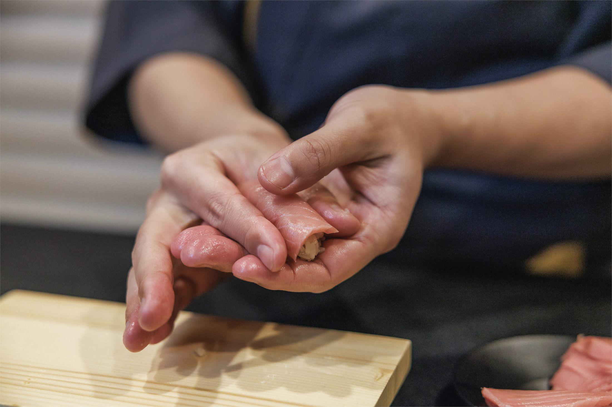
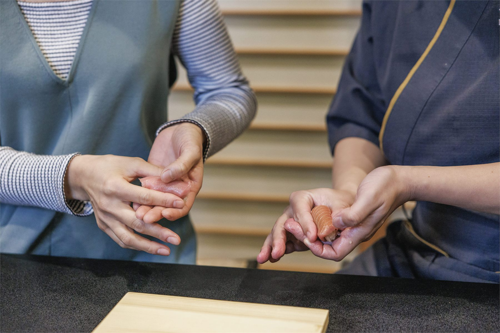
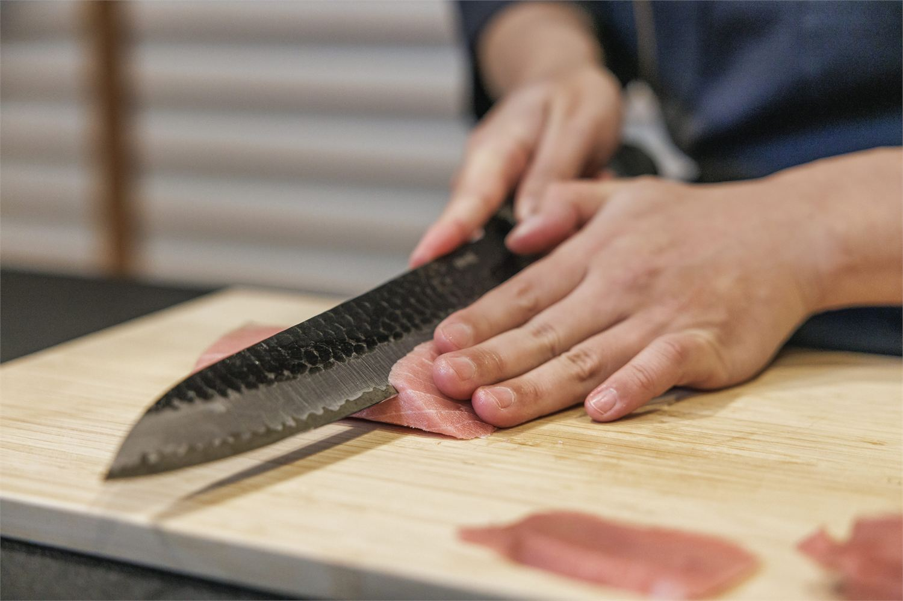
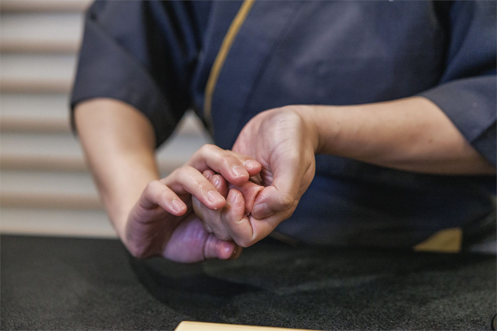
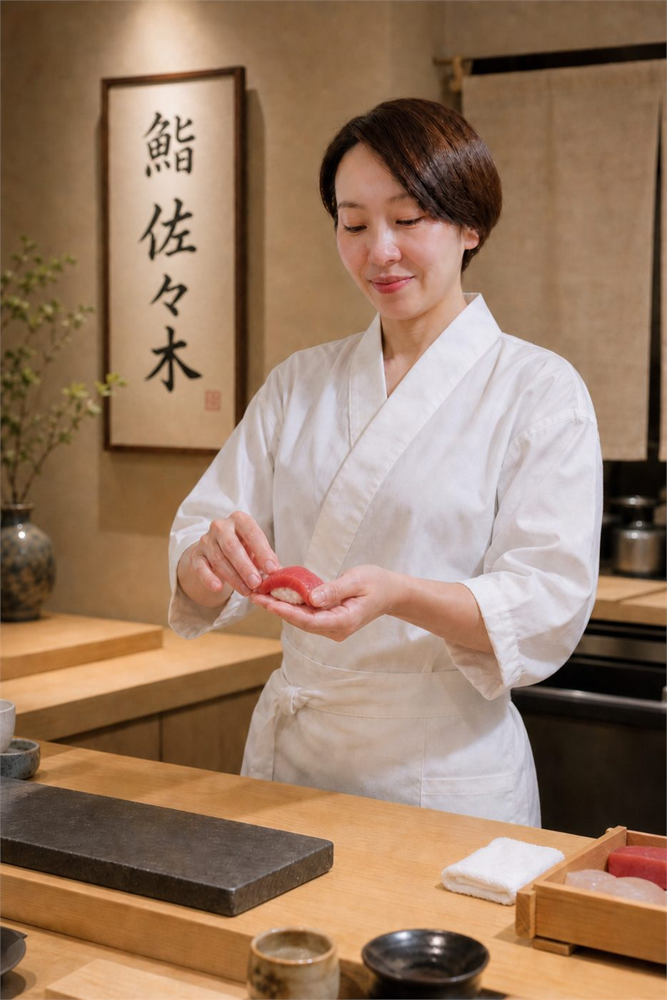
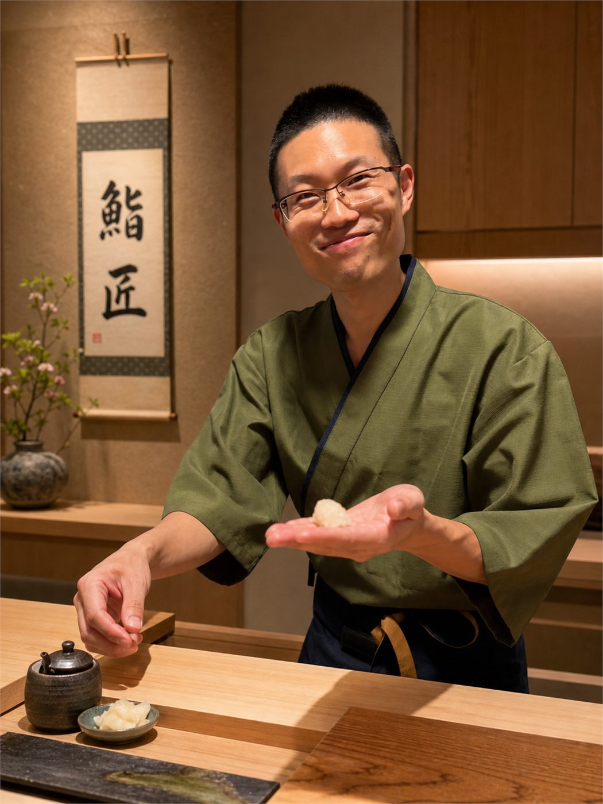
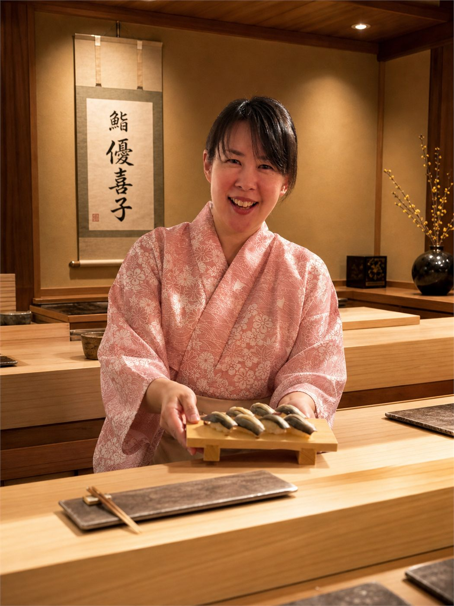
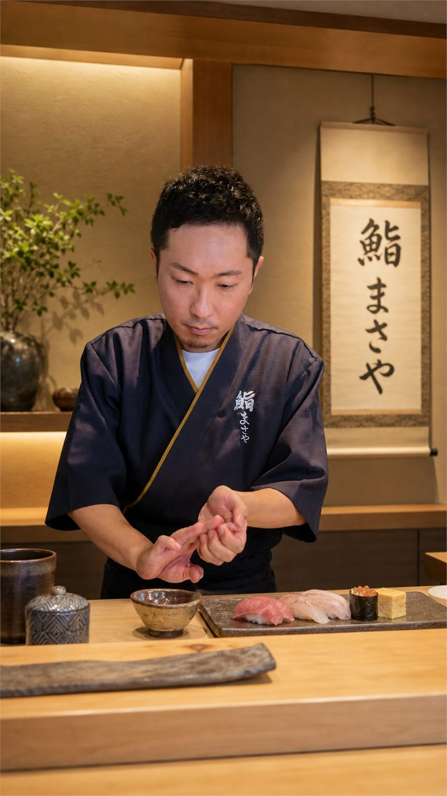

01
紹介制“鮨まさや”
当初は鮨を囲んで人と人が自然につながる時間でした。名刺交換よりも、お鮨を媒介にコミュニケーションした方が距離が縮まります。2025年は東京、大阪、福岡、茨城で計18回開催させていただきました。

鮨まさや大将が見守るカウンターで、
弟子が皆さんにお鮨を振る舞います。
ただ美味しく食べるだけではなく、
誰かの挑戦を、同じ席で分かち合う鮨会です。
我々は、鮨職人を育てたいわけではなく、「お互いの才能を活かし合える“共援者”」を増やしたいと考えています。新しいご縁がつながるのもこの会の醍醐味！
鮨は最強のコミュニケーションツールである

もともと鮨まさやは、紹介制の鮨会として始まりました。コンセプトは、「鮨を通じて分かち合い、ご縁を紡ぐ。」参加者同士が一品を持ち寄り、鮨を囲みながら語り合う。そんなお裾分け文化が自然と育ち、SNS集客ほぼゼロの口コミだけで席が埋まる場になっていきました。
当初は鮨を囲んで人と人が自然につながる時間でした。名刺交換よりも、お鮨を媒介にコミュニケーションした方が距離が縮まります。2025年は東京、大阪、福岡、茨城で計18回開催させていただきました。
全くの未経験でも、たった3時間で鮨がふるまえるようになる実践講座。ただ学ぶだけでなく、その後の握る実践の場もご用意しています。
そして今回は、教わる側から、もてなす側へ。鮨が握れるようになっても、握る実践の場って意外と少ないんです。ぜひその瞬間に立ち会ってください。
学びのための学びはせず、実際に握るという経験を積むことに重きを置いているからです。我々が大切にしているのは、鮨を通じて想いや才能を分かち合うこと。学ぶ機会はあっても、実践の場って意外と少ないんです。
6月、大型音楽FESにて、出演アーティスト向けの楽屋鮨が決定！そこに向けた修行の場も兼ねています。なぜ、そんな仕事の依頼が！？については当日お話します。



それぞれ本業が違う3人の弟子。個性を活かしてみなさんを精一杯おもてなしします。

本業は肌専門のエステティシャン。3時間の実践講座をきっかけに「2年後、鮨ママとしてお店をやりたい」と。スナックの元チーママがあなたをおもてなしします。

本業は環境整備コンサルタント。物理的な空間だけじゃなく、あらゆる土台を整えるプロ。25年の武術経験を活かしたその所作をご覧ください。

本業はセラピスト。人と人のご縁をつなぐのが得意な究極の人たらし。彼女らしい優しい握りをお楽しみください。

13年間の会社員生活を経て、未経験から鮨職人へ。本業はプロデューサー。偶然出会った鮨によって人生の流れが大きく変わった経験を、著書『経営者こそ、鮨を握れ』に綴る。鮨が最強のコミュニケーションツールであることを体現した。

※仕入れの都合のため、ご理解いただけますと幸いです。
騙されたと思って一度食べてみてください。見た目はまだ不格好かもしれませんが、味は保証します。なぜ美味しいか？のロジックがあるんです。
主催メンバーの知り合いを中心にお声がけしています。利害関係のない、気楽な場です。名刺交換もありません。
もちろんです。鮨を握っていると自然に会話が生まれますので、おひとりでいらしても全く浮きません。
むしろ、そういう方にこそ来ていただきたいです。改まって「初めまして」とご挨拶するよりも、一緒に鮨を分かち合いながらの方が、自然に打ち解けていただけると思います。